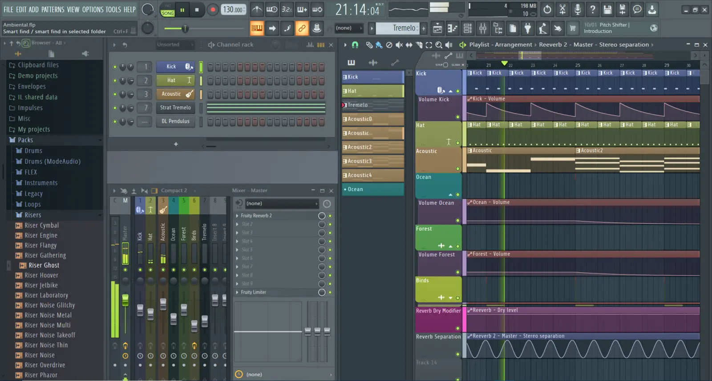
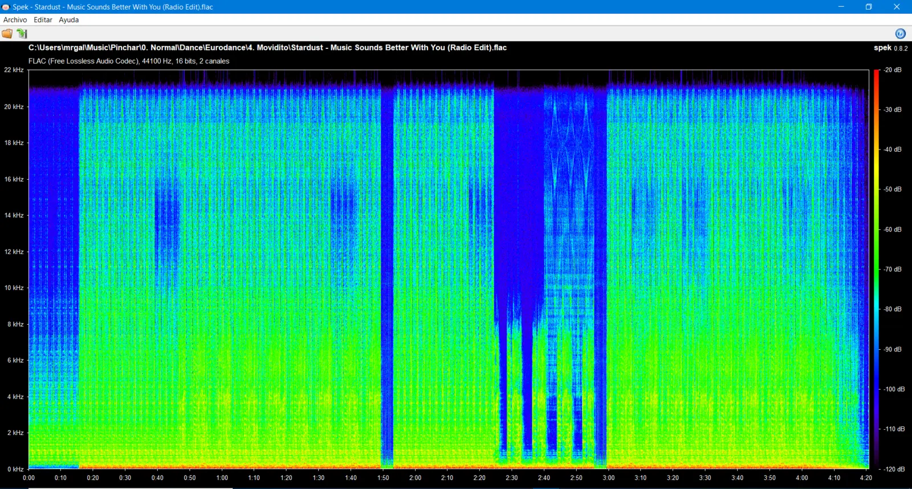
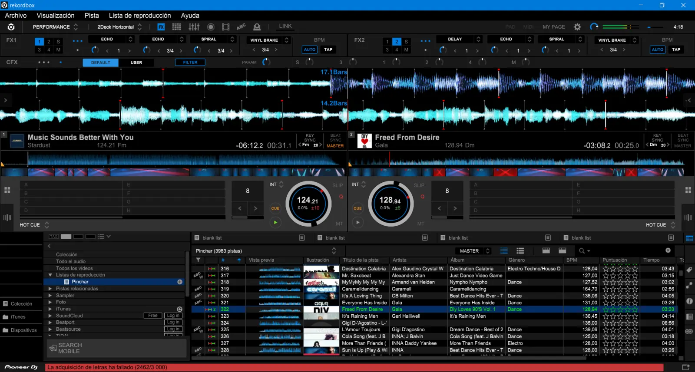

Sound
In some ways I still consider myself a beginner here, because there is a lot left to learn. Even so, I can use FL Studio 20 to make soundtracks for video games and many other things.

Here's a short ambient track I made:
And here's a synthwave piece I made:
Plugins
I know how audio plugins work, so I can shape sounds with reverb, delay, EQ and other effects for any project.


I can also DJ. It's more of a personal hobby, but it's closely related to what I've learned by studying music and sound on my own.
